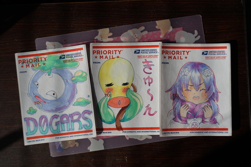
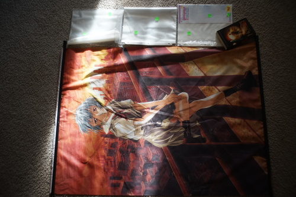

The other week I spent my tax refund renewing my passport. After crying writing the check at the post office, I took a few priority mail sticker labels home with me. I've seen a lot of graffiti using them around town. Copics work decently well on them and you don't even need a backer when using them because of the paper behind it.
Ryan and I saw one with a Koffing on it that said "support your local onlyfans girls" which inspired me to make DOGARS!!!!! Support your local dogars!!! I'm not bold enough to vandalize my town, so I gave all of them to Ryan. Neptune was his request! Cozy Neptune was my choice.
I made Hina a new skirt yesterday using the fabric I found in blog 149. The woman at the thrift store wanted me to show her what I make out of the fabric I've purchased there so now I don't have to show her Cheby's yukata if I show her this right?

My pattern almost worked flawlessly! I should had added a tiny bit extra to the waist to cover overlap. My last circle skirt pattern (on the white sundress) ended up WAY too big. Hopefully the happy medium will appear next time.
I had a painful ordering experience last week. Luts is having a discount sale on wigs, shoes, eyes, etc, so I decided it was actually time to buy all of my dolls decent wigs and shoes if they did not already have them. My total ended up over $500.
I ended up with 12 wigs, 8 pairs of leather shoes, 2 pairs of eyes, and 2 pairs of socks.
I am so mad at myself for having bought so many dolls. WHY did I let myself do this. I'm crumpling up my wishlist for now because I have TOO MANY F*ICKIN DOLLS. This is all my fault. Don't follow my lead. Leave your collection small.
I am happy with myself for learning how to sew. I may not have the best dressed dolls but they all have clothes and they'll keep getting more because I enjoy making clothes for them.
And a "thrift haul" from over a week ago
I'm at least willing to bet it's a bootleg based off no copyright marks and the style mismatch
I threw this garbage movie copy in my work bag.
Rei has some sort of nasty stains, so I took it off the rails, fray checked the edges, and washed it. I then did a rolled hem on the top and bottom, but there's STILL stains on it. They're hidden by the print, but easily visible on the back. Maybe I'll throw it back in again. I need my mom's spray and wash right about now.
I read Stuart Little the other day! I had only seen the movie before back when it came out. Needless to say, I barely remember it. I like how EB White just outright refused to explain where babies come from. There's a part at the end where Stuart goes on a date with a beautiful 2 inch tall woman and ruins it with his bad attitude. How embarrassing!